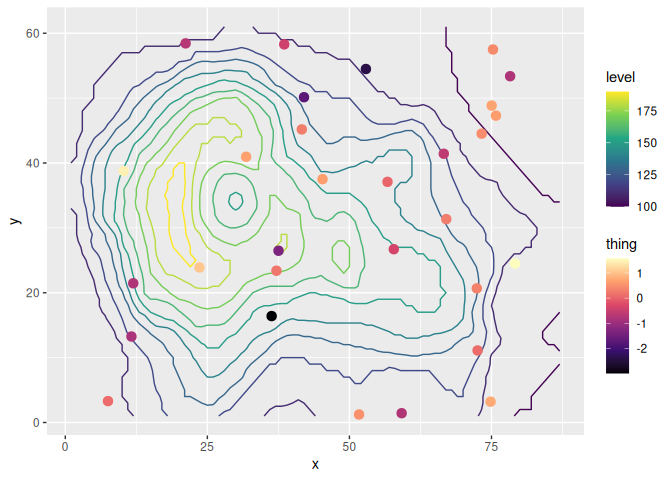

ggnewscale tries to make it painless to use multiple scales in ggplot2. Although originally intended to use with colour and fill, it should work with any aes, such as shape, linetype and the rest.
ggnewscale: spend 400% more time tweaking your ggplot!
For another way of defining multiple scales, you can also try relayer.
How to install
You can install ggnewscale from CRAN with:
install.packages("ggnewscale")Or the development version with:
# install.packages("devtools")
devtools::install_github("eliocamp/ggnewscale")How to cite
If you use ggnewscale in a publication, I’ll be grateful if you cited it. To get the suggested citation for this (and any other R package) you can use:
citation("ggnewscale")
#> To cite ggnewscale in publications use:
#>
#> Campitelli E (????). _ggnewscale: Multiple Fill and Colour Scales in
#> 'ggplot2'_. doi:10.5281/zenodo.2543762
#> <https://doi.org/10.5281/zenodo.2543762>, R package version
#> 0.4.9.9000.
#>
#> A BibTeX entry for LaTeX users is
#>
#> @Manual{R-ggnewscale,
#> title = {ggnewscale: Multiple Fill and Colour Scales in 'ggplot2'},
#> author = {Elio Campitelli},
#> note = {R package version 0.4.9.9000},
#> doi = {10.5281/zenodo.2543762},
#> }If you use knitr, you can automate this with
And then add citations with @R-ggnewscale.
Click to see a list of some publications that have cited ggnewscale. Thanks!
[1] E. Akhil Prakash, T. Hromádková, T. Jabir, et al. “Dissemination of Multidrug Resistant Bacteria to the Polar Environment - Role of the Longest Migratory Bird Arctic Tern (Sterna Paradisaea)”. In: Science of The Total Environment (Dec. 31, 2021), p. 152727. ISSN: 0048-9697. DOI: 10.1016/j.scitotenv.2021.152727. https://www.sciencedirect.com/science/article/pii/S0048969721078062 (visited on 01/03/2022).
[2] R. AminiTabrizi, R. M. Wilson, J. D. Fudyma, et al. “Controls on Soil Organic Matter Degradation and Subsequent Greenhouse Gas Emissions Across a Permafrost Thaw Gradient in Northern Sweden”. In: Frontiers in Earth Science 8 (2020). ISSN: 2296-6463. DOI: 10.3389/feart.2020.557961. https://www.frontiersin.org/articles/10.3389/feart.2020.557961/full (visited on 03/03/2021).
[3] D. Baker, J. Lauer, A. Ortega, et al. “Effects of Phycosphere Bacteria on Their Algal Host Are Host Species-Specific and Not Phylogenetically Conserved”. In: Microorganisms 11.1 (1 Jan. 2023), p. 62. ISSN: 2076-2607. DOI: 10.3390/microorganisms11010062. https://www.mdpi.com/2076-2607/11/1/62 (visited on 12/28/2022).
[4] L. Baumgarten, B. Pieper, B. Song, et al. “Pan-European Study of Genotypes and Phenotypes in the Arabidopsis Relative Cardamine Hirsuta Reveals How Adaptation, Demography, and Development Shape Diversity Patterns”. In: PLOS Biology 21.7 (Jul. 18, 2023), p. e3002191. ISSN: 1545-7885. DOI: 10.1371/journal.pbio.3002191. https://journals.plos.org/plosbiology/article?id=10.1371/journal.pbio.3002191 (visited on 07/24/2023).
[5] J. Botero, A. S. Sombolestani, M. Cnockaert, et al. “A Phylogenomic and Comparative Genomic Analysis of Commensalibacter, a Versatile Insect Symbiont”. In: Animal Microbiome 5.1 (Apr. 29, 2023), p. 25. ISSN: 2524-4671. DOI: 10.1186/s42523-023-00248-6. https://doi.org/10.1186/s42523-023-00248-6 (visited on 05/02/2023).
[6] I. N. Boys, A. G. Johnson, M. R. Quinlan, et al. “Structural Homology Screens Reveal Host-Derived Poxvirus Protein Families Impacting Inflammasome Activity”. In: Cell Reports 42.8 (Aug. 29, 2023), p. 112878. ISSN: 2211-1247. DOI: 10.1016/j.celrep.2023.112878. https://www.sciencedirect.com/science/article/pii/S2211124723008896 (visited on 07/30/2023).
[7] I. N. Boys, A. G. Johnson, M. Quinlan, et al. Structural Homology Screens Reveal Poxvirus-Encoded Proteins Impacting Inflammasome-Mediated Defenses. Feb. 27, 2023. https://www.biorxiv.org/content/10.1101/2023.02.26.529821v1 (visited on 03/02/2023). preprint.
[8] N. H. Buitendijk and B. A. Nolet. “Timing and Intensity of Goose Grazing: Implications for Grass Height and First Harvest”. In: Agriculture, Ecosystems & Environment 357 (Nov. 01, 2023), p. 108681. ISSN: 0167-8809. DOI: 10.1016/j.agee.2023.108681. https://www.sciencedirect.com/science/article/pii/S0167880923003407 (visited on 07/25/2023).
[9] M. E. Carey, Z. A. Dyson, D. J. Ingle, et al. “Global Diversity and Antimicrobial Resistance of Typhoid Fever Pathogens: Insights from a Meta-Analysis of 13,000 Salmonella Typhi Genomes”. In: eLife 12 (Sep. 12, 2023). Ed. by M. J. Bonten, J. W. van der Meer, M. J. Bonten and L. A. Cowley, p. e85867. ISSN: 2050-084X. DOI: 10.7554/eLife.85867. https://doi.org/10.7554/eLife.85867 (visited on 09/19/2023).
[10] H. Chen, G. Chew, N. Devapragash, et al. “The E3 Ubiquitin Ligase WWP2 Regulates Pro-Fibrogenic Monocyte Infiltration and Activity in Heart Fibrosis”. In: Nature Communications 13.1 (1 Nov. 30, 2022), p. 7375. ISSN: 2041-1723. DOI: 10.1038/s41467-022-34971-6. https://www.nature.com/articles/s41467-022-34971-6 (visited on 12/03/2022).
[11] X. Ding, K. Liu, Q. Yan, et al. “Sugar and Organic Acid Availability Modulate Soil Diazotroph Community Assembly and Species Co-Occurrence Patterns on the Tibetan Plateau”. In: Applied Microbiology and Biotechnology (Oct. 18, 2021). ISSN: 1432-0614. DOI: 10.1007/s00253-021-11629-9. https://doi.org/10.1007/s00253-021-11629-9 (visited on 10/21/2021).
[12] T. G. Drivas, A. Lucas, and M. D. Ritchie. “eQTpLot: A User-Friendly R Package for the Visualization of Colocalization between eQTL and GWAS Signals”. In: BioData Mining 14.1 (Jul. 17, 2021), p. 32. ISSN: 1756-0381. DOI: 10.1186/s13040-021-00267-6. https://doi.org/10.1186/s13040-021-00267-6 (visited on 07/21/2021).
[13] K. Giannakis, S. J. Arrowsmith, L. Richards, et al. “Evolutionary Inference across Eukaryotes Identifies Universal Features Shaping Organelle Gene Retention”. In: Cell Systems (Sep. 16, 2022). ISSN: 2405-4712. DOI: 10.1016/j.cels.2022.08.007. https://www.sciencedirect.com/science/article/pii/S2405471222003519 (visited on 09/19/2022).
[14] R. B. Gorodnichev, M. A. Kornienko, M. V. Malakhova, et al. “Isolation and Characterization of the First Zobellviridae Family Bacteriophage Infecting Klebsiella Pneumoniae”. In: International Journal of Molecular Sciences 24.4 (4 Jan. 2023), p. 4038. ISSN: 1422-0067. DOI: 10.3390/ijms24044038. https://www.mdpi.com/1422-0067/24/4/4038 (visited on 02/20/2023).
[15] M. C. Granovetter, L. Ettensohn, and M. Behrmann. “With Childhood Hemispherectomy, One Hemisphere Can Support—But Is Suboptimal for—Word and Face Recognition”. In: bioRxiv (Nov. 08, 2020), p. 2020.11.06.371823. DOI: 10.1101/2020.11.06.371823. https://www.biorxiv.org/content/10.1101/2020.11.06.371823v1 (visited on 03/03/2021).
[16] C. Higgs, L. S. Kumar, K. Stevens, et al. “Comparison of Contemporary Invasive and Non-Invasive Streptococcus Pneumoniae Isolates Reveals New Insights into Circulating Anti-Microbial Resistance Determinants”. In: Antimicrobial Agents and Chemotherapy 0.0 (Oct. 12, 2023), pp. e00785-23. DOI: 10.1128/aac.00785-23. https://journals.asm.org/doi/10.1128/aac.00785-23 (visited on 10/23/2023).
[17] C. Higgs, L. S. Kumar, K. Stevens, et al. “Population Structure, Serotype Distribution and Antibiotic Resistance of Streptococcus Pneumoniae Causing Invasive Disease in Victoria, Australia”. In: Microbial Genomics 9.7 (2023), p. 001070. ISSN: 2057-5858. DOI: 10.1099/mgen.0.001070. https://www.microbiologyresearch.org/content/journal/mgen/10.1099/mgen.0.001070 (visited on 07/25/2023).
[18] A. T. Hinsu, K. J. Panchal, R. J. Pandit, et al. “Characterizing Rhizosphere Microbiota of Peanut (Arachis Hypogaea L.) from Pre-Sowing to Post-Harvest of Crop under Field Conditions”. In: Scientific Reports 11.1 (1 Aug. 31, 2021), p. 17457. ISSN: 2045-2322. DOI: 10.1038/s41598-021-97071-3. https://www.nature.com/articles/s41598-021-97071-3 (visited on 09/06/2021).
[19] T. Hinzke, F. Tanneberger, C. Aggenbach, et al. “Response Patterns of Fen Sedges to a Nutrient Gradient Indicate Both Geographic Origin-Specific Genotypic Differences and Phenotypic Plasticity”. In: Wetlands 42.8 (Nov. 17, 2022), p. 113. ISSN: 1943-6246. DOI: 10.1007/s13157-022-01629-4. https://doi.org/10.1007/s13157-022-01629-4 (visited on 11/24/2022).
[20] M. Jenckel, I. Smith, T. King, et al. “Distribution and Genetic Diversity of Hepatitis E Virus in Wild and Domestic Rabbits in Australia”. In: Pathogens 10.12 (12 Dec. 2021), p. 1637. DOI: 10.3390/pathogens10121637. https://www.mdpi.com/2076-0817/10/12/1637 (visited on 12/21/2021).
[21] H. Jentsch and J. Weidinger. “Spatio-Temporal Analysis of Valley Wind Systems in the Complex Mountain Topography of the Rolwaling Himal, Nepal”. In: Atmosphere 13.7 (7 Jul. 2022), p. 1138. ISSN: 2073-4433. DOI: 10.3390/atmos13071138. https://www.mdpi.com/2073-4433/13/7/1138 (visited on 08/01/2022).
[22] B. Jiang, D. M. Weinstock, K. A. Donovan, et al. “ITK Degradation to Block T Cell Receptor Signaling and Overcome Therapeutic Resistance in T Cell Lymphomas”. In: Cell Chemical Biology 30.4 (Apr. 20, 2023), pp. 383-393.e6. ISSN: 2451-9456, 2451-9448. DOI: 10.1016/j.chembiol.2023.03.007. pmid: 37015223. https://www.cell.com/cell-chemical-biology/fulltext/S2451-9456(23)00086-7 (visited on 05/09/2023).
[23] X. Jin, F. B. Yu, J. Yan, et al. “Culturing of a Complex Gut Microbial Community in Mucin-Hydrogel Carriers Reveals Strain- and Gene-Associated Spatial Organization”. In: Nature Communications 14.1 (1 Jun. 14, 2023), p. 3510. ISSN: 2041-1723. DOI: 10.1038/s41467-023-39121-0. https://www.nature.com/articles/s41467-023-39121-0 (visited on 06/17/2023).
[24] P. M. Joubert and K. V. Krasileva. Distinct Genomic Contexts Predict Gene Presence-Absence Variation in Different Pathotypes of a Fungal Plant Pathogen. Feb. 17, 2023. https://www.biorxiv.org/content/10.1101/2023.02.17.529015v1 (visited on 02/20/2023). preprint.
[25] M. Jung, D. Wells, J. Rusch, et al. “Unified Single-Cell Analysis of Testis Gene Regulation and Pathology in Five Mouse Strains”. In: eLife 8 (Jun. 25, 2019). Ed. by D. Bourc’his, P. J. Wittkopp and S. Lukassen, p. e43966. ISSN: 2050-084X. DOI: 10.7554/eLife.43966. https://doi.org/10.7554/eLife.43966 (visited on 03/03/2021).
[26] T. Karasaki, D. A. Moore, S. Veeriah, et al. “Evolutionary Characterization of Lung Adenocarcinoma Morphology in TRACERx”. In: Nature Medicine (Apr. 12, 2023), pp. 1-13. ISSN: 1546-170X. DOI: 10.1038/s41591-023-02230-w. https://www.nature.com/articles/s41591-023-02230-w (visited on 04/14/2023).
[27] N. Khan, H. T. T. Nguyen, S. Galelli, et al. “Increasing Drought Risks Over the Past Four Centuries Amidst Projected Flood Intensification in the Kabul River Basin (Afghanistan and Pakistan)—Evidence From Tree Rings”. In: Geophysical Research Letters 49.24 (2022), p. e2022GL100703. ISSN: 1944-8007. DOI: 10.1029/2022GL100703. https://agupubs.onlinelibrary.wiley.com/doi/full/10.1029/2022GL100703 (visited on 05/09/2023).
[28] M. Kornienko, D. Bespiatykh, M. Malakhova, et al. “PCR Assay for Rapid Taxonomic Differentiation of Virulent Staphylococcus Aureus and Klebsiella Pneumoniae Bacteriophages”. In: International Journal of Molecular Sciences 24.5 (5 Jan. 2023), p. 4483. ISSN: 1422-0067. DOI: 10.3390/ijms24054483. https://www.mdpi.com/1422-0067/24/5/4483 (visited on 03/02/2023).
[29] S. Kudrenko, J. Vollering, A. Zedrosser, et al. “Walking on the Dark Side: Anthropogenic Factors Limit Suitable Habitat for Gray Wolf (Canis Lupus) in a Large Natural Area Covering Belarus and Ukraine”. In: Global Ecology and Conservation (Jul. 24, 2023), p. e02586. ISSN: 2351-9894. DOI: 10.1016/j.gecco.2023.e02586. https://www.sciencedirect.com/science/article/pii/S2351989423002214 (visited on 07/27/2023).
[30] A. Lan, K. Kang, S. Tang, et al. “Fine-Scale Population Structure and Demographic History of Han Chinese Inferred from Haplotype Network of 111,000 Genomes”. In: bioRxiv (Jul. 04, 2020), p. 2020.07.03.166413. DOI: 10.1101/2020.07.03.166413. https://www.biorxiv.org/content/10.1101/2020.07.03.166413v2 (visited on 03/03/2021).
[31] Z. Lapp, R. Crawford, A. Miles-Jay, et al. “Regional Spread of blaNDM-1-containing Klebsiella Pneumoniae ST147 in Post-Acute Care Facilities”. In: Clinical Infectious Diseases (ciab457 May. 17, 2021). ISSN: 1058-4838. DOI: 10.1093/cid/ciab457. https://doi.org/10.1093/cid/ciab457 (visited on 05/21/2021).
[32] L. S. H. Lee and C. Y. Jim. “Thermal and Humidification Effects of a Swimming Pool in Hong Kong’s Humid-Subtropical Summer”. In: Sustainable Cities and Society (Jul. 22, 2023), p. 104816. ISSN: 2210-6707. DOI: 10.1016/j.scs.2023.104816. https://www.sciencedirect.com/science/article/pii/S2210670723004274 (visited on 07/25/2023).
[33] Z. Liang, T. Liu, Q. Li, et al. “Deciphering the Functional Landscape of Phosphosites with Deep Neural Network”. In: Cell Reports 42.9 (Sep. 26, 2023). ISSN: 2211-1247. DOI: 10.1016/j.celrep.2023.113048. pmid: 37659078. https://www.cell.com/cell-reports/abstract/S2211-1247(23)01059-8 (visited on 09/19/2023).
[34] X. Lin, Z. Sha, J. Trimpert, et al. “The NSP4 T492I Mutation Increases SARS-CoV-2 Infectivity by Altering Non-Structural Protein Cleavage”. In: Cell Host & Microbe (Jul. 03, 2023). ISSN: 1931-3128. DOI: 10.1016/j.chom.2023.06.002. https://www.sciencedirect.com/science/article/pii/S1931312823002536 (visited on 07/06/2023).
[35] J. Ma, X. Zhu, R. Hu, et al. “A Systematic Review, Meta-Analysis and Meta-Regression of the Global Prevalence of Foodborne Vibrio Spp. Infection in Fishes: A Persistent Public Health Concern”. In: Marine Pollution Bulletin 187 (Feb. 01, 2023), p. 114521. ISSN: 0025-326X. DOI: 10.1016/j.marpolbul.2022.114521. https://www.sciencedirect.com/science/article/pii/S0025326X22012036 (visited on 01/10/2023).
[36] D. G. Maghini, M. Dvorak, A. Dahlen, et al. “Quantifying Bias Introduced by Sample Collection in Relative and Absolute Microbiome Measurements”. In: Nature Biotechnology (Apr. 27, 2023), pp. 1-11. ISSN: 1546-1696. DOI: 10.1038/s41587-023-01754-3. https://www.nature.com/articles/s41587-023-01754-3 (visited on 05/02/2023).
[37] E. Merino Tejero, D. Lashgari, R. García-Valiente, et al. “Multiscale Modeling of Germinal Center Recapitulates the Temporal Transition From Memory B Cells to Plasma Cells Differentiation as Regulated by Antigen Affinity-Based Tfh Cell Help”. In: Frontiers in Immunology 11 (Feb. 05, 2021). ISSN: 1664-3224. DOI: 10.3389/fimmu.2020.620716. pmid: 33613551. https://www.ncbi.nlm.nih.gov/pmc/articles/PMC7892951/ (visited on 03/03/2021).
[38] I. Mokrousov, A. Vyazovaya, E. Shitikov, et al. “Insight into Pathogenomics and Phylogeography of Hypervirulent and Highly-Lethal Mycobacterium Tuberculosis Strain Cluster”. In: BMC Infectious Diseases 23.1 (Jun. 23, 2023), p. 426. ISSN: 1471-2334. DOI: 10.1186/s12879-023-08413-7. https://doi.org/10.1186/s12879-023-08413-7 (visited on 06/28/2023).
[39] G. Papacharalampous, H. Tyralis, S. M. Papalexiou, et al. “Global-Scale Massive Feature Extraction from Monthly Hydroclimatic Time Series: Statistical Characterizations, Spatial Patterns and Hydrological Similarity”. In: Science of The Total Environment 767 (May. 01, 2021), p. 144612. ISSN: 0048-9697. DOI: 10.1016/j.scitotenv.2020.144612. https://www.sciencedirect.com/science/article/pii/S0048969720381432 (visited on 03/03/2021).
[40] C. Plaza, P. García-Palacios, A. A. Berhe, et al. “Ecosystem Productivity Has a Stronger Influence than Soil Age on Surface Soil Carbon Storage across Global Biomes”. In: Communications Earth & Environment 3.1 (1 Oct. 07, 2022), pp. 1-8. ISSN: 2662-4435. DOI: 10.1038/s43247-022-00567-7. https://www.nature.com/articles/s43247-022-00567-7 (visited on 10/12/2022).
[41] C. Plaza, P. García-Palacios, A. A. Berhe, et al. “Ecosystem Productivity Has a Stronger Influence than Soil Age on Surface Soil Carbon Storage across Global Biomes”. In: Communications Earth & Environment 3.1 (1 Oct. 07, 2022), pp. 1-8. ISSN: 2662-4435. DOI: 10.1038/s43247-022-00567-7. https://www.nature.com/articles/s43247-022-00567-7 (visited on 10/31/2022).
[42] P. Pottier, H. Lin, R. R. Y. Oh, et al. “A Comprehensive Database of Amphibian Heat Tolerance”. In: Scientific Data 9.1 (1 Oct. 04, 2022), p. 600. ISSN: 2052-4463. DOI: 10.1038/s41597-022-01704-9. https://www.nature.com/articles/s41597-022-01704-9 (visited on 10/08/2022).
[43] J. M. Quilty, A. E. Sikorska-Senoner, and D. Hah. “A Stochastic Conceptual-Data-Driven Approach for Improved Hydrological Simulations”. In: Environmental Modelling & Software (Jan. 16, 2022), p. 105326. ISSN: 1364-8152. DOI: 10.1016/j.envsoft.2022.105326. https://www.sciencedirect.com/science/article/pii/S1364815222000329 (visited on 01/19/2022).
[44] D. L. Rios, P. C. L. da Silva, C. S. S. Moura, et al. “Comparative Metatranscriptome Analysis of Brazilian Milk and Water Kefir Beverages”. In: International Microbiology (Sep. 28, 2023). ISSN: 1618-1905. DOI: 10.1007/s10123-023-00431-4. https://doi.org/10.1007/s10123-023-00431-4 (visited on 10/03/2023).
[45] H. Rodenhizer, F. Belshe, G. Celis, et al. “Abrupt Permafrost Thaw Accelerates Carbon Dioxide and Methane Release at a Tussock Tundra Site”. In: Arctic, Antarctic, and Alpine Research 54.1 (Dec. 31, 2022), pp. 443-464. ISSN: 1523-0430. DOI: 10.1080/15230430.2022.2118639. https://doi.org/10.1080/15230430.2022.2118639 (visited on 10/04/2022).
[46] A. Rutz, M. Sorokina, J. Galgonek, et al. “Open Natural Products Research: Curation and Dissemination of Biological Occurrences of Chemical Structures through Wikidata”. In: bioRxiv (Mar. 01, 2021), p. 2021.02.28.433265. DOI: 10.1101/2021.02.28.433265. https://www.biorxiv.org/content/10.1101/2021.02.28.433265v1 (visited on 03/07/2021).
[47] M. R. Scharn, M. C. G. Brachmann, M. A. Patchett, et al. Vegetation Responses to 26 Years of Warming at Latnjajaure Field Station, Northern Sweden. https://doi.org/10.1139/AS-2020-0042. Apr. 01, 2021. https://cdnsciencepub.com/doi/abs/10.1139/AS-2020-0042 (visited on 04/05/2021).
[48] L. Seep, Z. Razaghi-Moghadam, and Z. Nikoloski. “Reaction Lumping in Metabolic Networks for Application with Thermodynamic Metabolic Flux Analysis”. In: Scientific Reports 11.1 (1 Apr. 20, 2021), p. 8544. ISSN: 2045-2322. DOI: 10.1038/s41598-021-87643-8. https://www.nature.com/articles/s41598-021-87643-8 (visited on 04/23/2021).
[49] O. Seppälä. “Spatial and Temporal Drivers of Soil Respiration in a Tundra Environment”. MA Thesis. FACULTY OF SCIENCE DEPARTMENT OF GEOSCIENCES AND GEOGRAPHY GEOGRAPHY: UNIVERSITY OF HELSINKI, 2020.
[50] L. Shah, C. A. Arnillas, and G. B. Arhonditsis. “Characterizing Temporal Trends of Meteorological Extremes in Southern and Central Ontario, Canada”. In: Weather and Climate Extremes (Jan. 25, 2022), p. 100411. ISSN: 2212-0947. DOI: 10.1016/j.wace.2022.100411. https://www.sciencedirect.com/science/article/pii/S2212094722000056 (visited on 01/29/2022).
[51] S. A. Simon, K. Schmidt, L. Griesdorn, et al. Dancing the Nanopore Limbo – Nanopore Metagenomics from Small DNA Quantities for Bacterial Genome Reconstruction. Feb. 16, 2023. https://www.biorxiv.org/content/10.1101/2023.02.16.527874v1 (visited on 02/20/2023). preprint.
[52] C. C. Smith, S. Entwistle, C. Willis, et al. “Landscape and Selection of Vaccine Epitopes in SARS-CoV-2”. In: bioRxiv (Jun. 04, 2020). DOI: 10.1101/2020.06.04.135004. pmid: 32577654. https://www.ncbi.nlm.nih.gov/pmc/articles/PMC7302209/ (visited on 03/03/2021).
[53] F. St-Onge, M. Javanray, A. Pichet Binette, et al. “Functional Connectome Fingerprinting across the Lifespan”. In: Network Neuroscience (May. 04, 2023), pp. 1-55. ISSN: 2472-1751. DOI: 10.1162/netn_a_00320. https://doi.org/10.1162/netn_a_00320 (visited on 05/09/2023).
[54] S. N. Thiede, E. S. Snitkin, W. Trick, et al. “Genomic Epidemiology Suggests Community Origins of Healthcare-Associated USA300 MRSA”. In: The Journal of Infectious Diseases (Feb. 16, 2022), p. jiac056. ISSN: 0022-1899. DOI: 10.1093/infdis/jiac056. https://doi.org/10.1093/infdis/jiac056 (visited on 02/26/2022).
[55] A. Torres-Espín, A. Chou, J. R. Huie, et al. “Reproducible Analysis of Disease Space via Principal Components Using the Novel R Package syndRomics”. In: eLife 10 (Jan. 14, 2021). Ed. by M. Zaidi and M. Barton, p. e61812. ISSN: 2050-084X. DOI: 10.7554/eLife.61812. https://doi.org/10.7554/eLife.61812 (visited on 03/03/2021).
[56] C. Wang, X. Zhao, H. Zhang, et al. “Comprehensive Analysis of Immune-Related Genes Associated with the Microenvironment of Patients with Unexplained Infertility”. In: Annals of Translational Medicine 11.2 (2 Jan. 2023), pp. 84-84. ISSN: 2305-5847, 2305-5839. DOI: 10.21037/atm-22-5810. https://atm.amegroups.com/article/view/108642 (visited on 02/12/2023).
[57] L. Weidenauer and M. Quadroni. “Phosphorylation in the Charged Linker Modulates Interactions and Secretion of Hsp90β”. In: Cells 10.7 (7 Jul. 2021), p. 1701. DOI: 10.3390/cells10071701. https://www.mdpi.com/2073-4409/10/7/1701 (visited on 07/08/2021).
[58] D. Wendisch, O. Dietrich, T. Mari, et al. “SARS-CoV-2 Infection Triggers Profibrotic Macrophage Responses and Lung Fibrosis”. In: Cell (Nov. 27, 2021). ISSN: 0092-8674. DOI: 10.1016/j.cell.2021.11.033. https://www.sciencedirect.com/science/article/pii/S0092867421013830 (visited on 12/11/2021).
[59] R. Woyda, A. Oladeinde, and Z. Abdo. “Chicken Production and Human Clinical Escherichia Coli Isolates Differ in Their Carriage of Antimicrobial Resistance and Virulence Factors”. In: Applied and Environmental Microbiology 0.0 (Jan. 18, 2023), pp. e01167-22. DOI: 10.1128/aem.01167-22. https://journals.asm.org/doi/abs/10.1128/aem.01167-22 (visited on 01/25/2023).
[60] R. J. Wright, M. G. I. Langille, and T. R. Walker. “Food or Just a Free Ride? A Meta-Analysis Reveals the Global Diversity of the Plastisphere”. In: The ISME Journal 15.3 (3 Mar. 2021), pp. 789-806. ISSN: 1751-7370. DOI: 10.1038/s41396-020-00814-9. https://www.nature.com/articles/s41396-020-00814-9 (visited on 03/03/2021).
[61] P. Wu, C. Chang, G. Zhu, et al. “Network Pharmacology Study of Bioactive Components and Molecular Mechanisms of the Glycoside Fraction from <em>Picrorhiza Scrophulariiflora</Em> Against Experimental Colitis”. In: Drug Design, Development and Therapy 17 (May. 23, 2023), pp. 1531-1546. DOI: 10.2147/DDDT.S407339. https://www.dovepress.com/network-pharmacology-study-of-bioactive-components-and-molecular-mecha-peer-reviewed-fulltext-article-DDDT (visited on 05/28/2023).
[62] T. Wyenberg-Henzler, R. T. Patterson, and J. C. Mallon. “Ontogenetic Dietary Shifts in North American Hadrosaurids”. In: Cretaceous Research (Feb. 23, 2022), p. 105177. ISSN: 0195-6671. DOI: 10.1016/j.cretres.2022.105177. https://www.sciencedirect.com/science/article/pii/S0195667122000416 (visited on 02/26/2022).
[63] L. Xie, H. Liu, Z. You, et al. “Comprehensive Spatiotemporal Mapping of Single-Cell Lineages in Developing Mouse Brain by CRISPR-based Barcoding”. In: Nature Methods (Jul. 17, 2023), pp. 1-12. ISSN: 1548-7105. DOI: 10.1038/s41592-023-01947-3. https://www.nature.com/articles/s41592-023-01947-3 (visited on 07/24/2023).
[64] M. Xie, B. Cheng, S. Yu, et al. “Cuproptosis-Related MiR-21-5p/FDX1 Axis in Clear Cell Renal Cell Carcinoma and Its Potential Impact on Tumor Microenvironment”. In: Cells 12.1 (Dec. 31, 2022), p. 173. ISSN: 2073-4409. DOI: 10.3390/cells12010173. pmid: 36611966.
[65] Y. Xu, M. Price, P. Que, et al. “Ecological Predictors of Interspecific Variation in Bird Bill and Leg Lengths on a Global Scale”. In: Proceedings of the Royal Society B: Biological Sciences 290.2003 (Jul. 26, 2023), p. 20231387. DOI: 10.1098/rspb.2023.1387. https://royalsocietypublishing.org/doi/abs/10.1098/rspb.2023.1387 (visited on 07/30/2023).
[66] A. Yan, J. Butcher, D. Mack, et al. “Virome Sequencing of the Human Intestinal Mucosal–Luminal Interface”. In: Frontiers in Cellular and Infection Microbiology 10 (Oct. 22, 2020). ISSN: 2235-2988. DOI: 10.3389/fcimb.2020.582187. pmid: 33194818. https://www.ncbi.nlm.nih.gov/pmc/articles/PMC7642909/ (visited on 03/03/2021).
[67] P. Zannini, F. Frascaroli, J. Nascimbene, et al. “Sacred Natural Sites and Biodiversity Conservation: A Systematic Review”. In: Biodiversity and Conservation (Sep. 30, 2021). ISSN: 1572-9710. DOI: 10.1007/s10531-021-02296-3. https://doi.org/10.1007/s10531-021-02296-3 (visited on 10/04/2021).
[68] H. L. Zhang, K. J. Gontjes, J. H. Han, et al. “Characterization of Resistance to Newer Antimicrobials among Carbapenem-Resistant Klebsiella Pneumoniae in the Post–Acute-Care Setting”. In: Infection Control & Hospital Epidemiology (Jul. 28, 2022), pp. 1-4. ISSN: 0899-823X, 1559-6834. DOI: 10.1017/ice.2022.185. https://www.cambridge.org/core/journals/infection-control-and-hospital-epidemiology/article/abs/characterization-of-resistance-to-newer-antimicrobials-among-carbapenemresistant-klebsiella-pneumoniae-in-the-postacutecare-setting/33D7F100FEF2CA18FBED645D8A268EA8#supplementary-materials (visited on 08/01/2022).
[69] X. Zhang, X. Yu, Z. Yu, et al. “Network Pharmacology and Bioinformatics to Identify Molecular Mechanisms and Therapeutic Targets of Ruyi Jinhuang Powder in the Treatment of Monkeypox”. In: Medicine 102.17 (Apr. 25, 2023), p. e33576. DOI: 10.1097/MD.0000000000033576. https://journals.lww.com/md-journal/Fulltext/2023/04250/Network_pharmacology_and_bioinformatics_to.34.aspx (visited on 05/02/2023).
[70] P. Zhu, W. Liu, X. Zhang, et al. “Correlated Evolution of Social Organization and Lifespan in Mammals”. In: Nature Communications 14.1 (1 Jan. 31, 2023), p. 372. ISSN: 2041-1723. DOI: 10.1038/s41467-023-35869-7. https://www.nature.com/articles/s41467-023-35869-7 (visited on 02/04/2023).Usage
The main function is new_scale() and its aliases new_scale_color() and new_scale_fill(). When added to a plot, every geom added after them will use a different scale.
As an example, let’s overlay some measurements over a contour map of topography using the beloved volcano.
library(ggplot2)
library(ggnewscale)
# Equivalent to melt(volcano)
topography <- expand.grid(x = 1:nrow(volcano),
y = 1:ncol(volcano))
topography$z <- c(volcano)
# point measurements of something at a few locations
set.seed(42)
measurements <- data.frame(x = runif(30, 1, 80),
y = runif(30, 1, 60),
thing = rnorm(30))
ggplot(mapping = aes(x, y)) +
geom_contour(data = topography, aes(z = z, color = stat(level))) +
# Color scale for topography
scale_color_viridis_c(option = "D") +
# geoms below will use another color scale
new_scale_color() +
geom_point(data = measurements, size = 3, aes(color = thing)) +
# Color scale applied to geoms added after new_scale_color()
scale_color_viridis_c(option = "A")
#> Warning: `stat(level)` was deprecated in ggplot2 3.4.0.
#> ℹ Please use `after_stat(level)` instead.
#> This warning is displayed once every 8 hours.
#> Call `lifecycle::last_lifecycle_warnings()` to see where this warning was
#> generated.
If you want to create new scales for other aes, you can call new_scale with the name of the aes. For example, use
new_scale("linetype")to add multiple linetype scales.